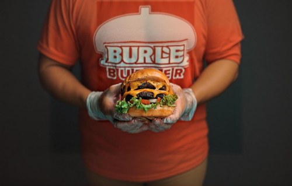

Double Burger
Zutaten für:
4
große/s
Bürgerbrötchen
800
g
Rinderhackfleisch
8
Scheiben
Bacon
8
Scheiben
Cheddarkäse
4
m.-große
Zwiebel
2
Scheiben
Tomaten
2
Blätter
Salat (Lollo Bionda)
Meersalz
Schwarzer Pfeffer
BBQ-Soße, rauchig
Sonnenblumenöl
evtl.
Butterschmalz
evtl
Flüssigrauch
Zubereitung
Die Pattys in der Pfanne in Butterschmalz oder auf dem Grill medium braten. Gegen Ende der Garzeit Cheddar auflegen, damit er schmilzt. Pattys kurz ruhen lassen. Bacon in der Pfanne oder auf weniger heißer Zone des Grills braten, dann auf Küchenpapier abtropfen lassen.
Zwiebel in Ringe schneiden, in heißem Sonnenblumenöl knusprig frittieren, abtropfen und warmhalten. Tomaten und Salat vorbereiten, Brötchen aufschneiden.
Burger zusammenbauen: Brötchenunterseite, Lollo Bionda, Bacon, Patty, Cheddar, Barbecue-Sauce, Tomatenscheiben, Zwiebelringe, zweiter Patty, Cheddar, Barbecue-Sauce, Tomatenscheiben, Zwiebelringe, Burger Deckel.
Tipp: Selbst gebackenes Brötchen und hausgemachte Barbecue-Sauce verbessern das Ergebnis
Rezept erstellt von
Eugen